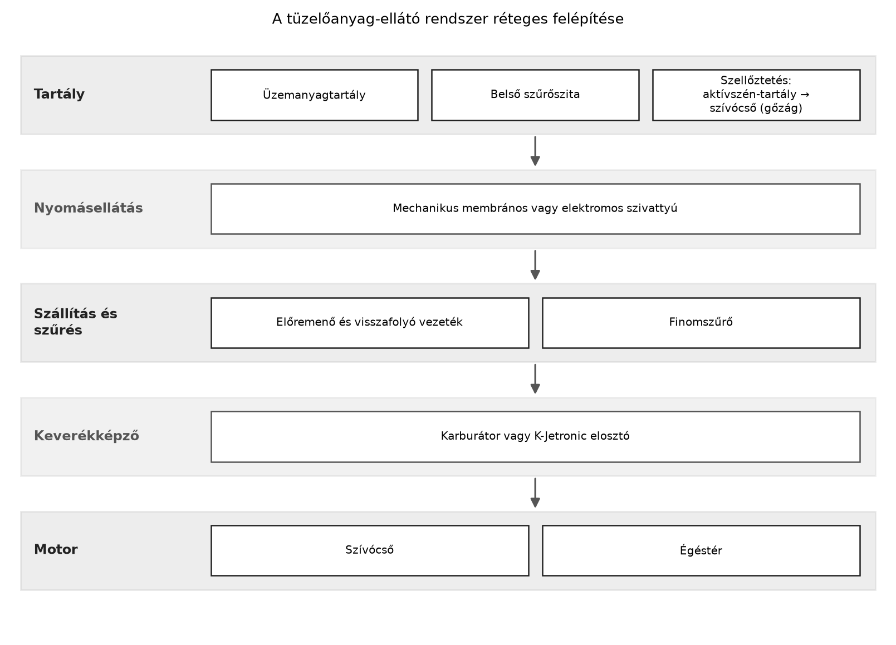

Egy 1990-es évekbeli, benzines autó hidegen nehezen indul, meleg motornál időnként lefullad, és a műhelyben enyhe benzingőz-szagot érezni. A tulajdonos szerint „már megint a karburátor”. Mielőtt bármit szétszednénk, tudnunk kell, hogyan jut el a benzin a tartálytól a motorig, milyen részegységek milyen hibái okozhatják ezeket a tüneteket, és hogyan működtek azok a keverékképző rendszerek, amelyek a mai elektronikus befecskendezés előfutárai voltak. Ez a tudás a modern Szívócső-befecskendezés: központi (SPi) és hengerenkénti (MPi) rendszerek alfejezet megértésének alapja is.
Képzeljük el, ahogy a benzin útját követjük a jármű hátuljától a motorig. A tartály alsó részén szitaszűrő, fölötte szivattyú, majd fém- és műanyag csővezetékek, a motortérben finomszűrő, végül a keverékképző (karburátor vagy mechanikus befecskendező elosztó) és a szívócső következik. A régi autókon a benzingőzt egyszerűen a légkörbe eresztették, a modernebb rendszerekben aktívszén-tartály köti meg.

A rétegek fentről lefelé: a tartály (a szellőztetés gőzágával), a nyomásellátás (szivattyú), a szállítás és szűrés, a keverékképző, végül a motor. A benzin előremenő ága a tartályból a szivattyún és a finomszűrőn át a keverékképzőbe jut; a szabályozott rendszerekben a felesleg visszafolyik a tartályba.
Definíció. Karburátor (carburettor; „karbi”). Olyan mechanikus keverékképző szerkezet, amely a beszívott levegő áramlási energiájával porlasztja és méri a benzint, és a benzin–levegő keveréket a motor szívócsövébe juttatja.
Definíció. Légviszony (, lambda). A ténylegesen beszívott levegő tömegének és a betáplált tüzelőanyag tökéletes elégetéséhez elméletileg szükséges levegőtömegnek az aránya. Benzin esetén a sztöchiometrikus levegőigény kg levegő / kg benzin.
Definíció. K-Jetronic. A Bosch cég folyamatos (nem szakaszos) mechanikus-hidraulikus benzinbefecskendező rendszere (csak a szivattyú és a melegedésszabályozó fűtése villamos). A beszívott levegő mennyiségét egy emelőtárcsás légmennyiségmérő érzékeli, és mechanikusan vezérli a tüzelőanyag-elosztó adagolódugattyúját. A KE-Jetronic ennek elektronikus lambda-szabályozással kiegészített változata.
Továbbvitt eredmény. A motor különböző üzemállapotokban (hidegindítás, alapjárat, részterhelés, teljes terhelés, gyorsítás) más és más -t igényel. A karburátor ezt mechanikus-hidraulikus elemekkel, a K/KE-Jetronic mechanikusan és elektronikusan közelíti. Ezt az üzemállapotonkénti keverékképzési táblázatot (lásd az Üzemállapotok keverékigénye szakaszt) használjuk a Szívócső-befecskendezés: központi (SPi) és hengerenkénti (MPi) rendszerek alfejezetben, amikor a modern befecskendező rendszerek jelleggörbéit tanuljuk.
Feladat a benzin biztonságos tárolása, szűrése és eljuttatása a keverékképzőhöz. A tartály lehet acél vagy műanyag; belsejében terelőlemezek csökkentik a benzin hullámzását, alján szitaszűrő védi a szivattyút a durva szennyeződéstől. A finomszűrő a motortérben vagy a tartálynál helyezkedik el, pórusmérete jellemzően 5–10 mikrométer körüli (ellenőrizendő: gyártói adat).
A szállító vezetékek nyomásálló acél- vagy többrétegű műanyag csövek. A karburátoros és mechanikus befecskendezős rendszerekben gyakran van visszafolyó ág, amely a felesleges benzint a tartályba vezeti vissza. Ez megakadályozza a benzin felforrósodásából adódó gőzzárat, és állandó áramlást biztosít a szivattyúnak.
A benzin párolgása miatt a tartályban nyomáskülönbség alakulna ki, ezért szellőztetni kell. A korai járműveken a tartályt egyszerűen a légkörbe szellőztették, ami jelentős párolgási emissziót okozott. A modernebb rendszerekben a aktívszén-tartály (EVAP tartály) aktív szén felületén megköti a benzingőzt, majd amikor a motor jár, egy mágnesszelep szabályozottan a szívócsőbe engedi a gőzt, hogy az elégjen. Az EVAP-rendszer részletes diagnosztikáját az Emissziós szabályozás, Euro-normák és alternatív tüzelőanyagok alfejezet tárgyalja (ellenőrizendő: az alfejezet ténylegesen tárgyalja-e az EVAP-diagnosztikát).
Mechanikus membrános szivattyú. Régi karburátoros járműveken a vezérműtengely bütyke mozgatja a membránt; rugó nyomja a membránt, ami a szívó- és nyomószelepeken keresztül szállítja a benzint. Nyomása alacsony, jellemzően 0,1–0,3 bar (ellenőrizendő: gyártói adat). Előnye az egyszerűség, hátránya, hogy a motor indítása előtt nem szállít, és meleg motornál gőzzárra hajlamos.
Elektromos szivattyúk. A mai és a korszerűbb régi rendszerekben a szivattyú a tartályban vagy a tartály közelében van. Két gyakori kivitel:
A tartálymodulban a szivattyú egy terelőedényben áll, így kanyarban és kevés üzemanyagnál sem szív levegőt; a szintjeladó úszója lengőkaron át egy ellenállást állít. A görgőcellás szivattyúban a tárcsa excentrikusan áll a házban: a két görgő közötti cella a szívónyílásnál nő, a nyomónyílásnál csökken – az interaktív változat ezt forgás közben mutatja. A membrános szivattyú membránját a bütyök emelőkaron át húzza le (szívás), a rugó nyomja vissza (szállítás).
Az elektromos szivattyú nyomása a rendszertől függ: karburátoros rendszerekben jellemzően 0,2–0,4 bar, mechanikus befecskendezésnél (K-Jetronic) 5 bar körüli (ellenőrizendő: gyártói adat). A nyomást nyomáskorlátozó szelep tartja fenn; a felesleg a visszafolyó ágon távozik. A modern rendszerekben az elektronikus vezérlő az igény szerinti szabályozást (pl. a szivattyú fordulatszámának változtatását) is alkalmazza, hogy ne melegítse feleslegesen a benzint és csökkentse az energiafogyasztást.
A motor különböző üzemállapotokban más légviszonyt igényel. Az alábbi értékek tájékoztatók, gyártónként és típusonként eltérnek (ellenőrizendő: gyártói adat).
| Üzemállapot | Igényelt (tájékoztató) | Karburátor-rendszer | K-Jetronic megoldás |
|---|---|---|---|
| Hidegindítás | a hengerbe jutó tényleges keverékre nézve kb. 0,2–0,6 (ellenőrizendő) | szívató | hidegindító szelep, alacsony vezérlőnyomás |
| Bemelegedés | kb. 0,8–0,95 | szívató / automata szívató | melegedésszabályozó |
| Alapjárat | kb. 1,0 (régen 0,9–1,0) | alapjárati rendszer | alapjárati keverékcsavar |
| Részterhelés | kb. 1,0–1,1 | főfúvóka-rendszer | tüzelőanyag-elosztó |
| Teljes terhelés | kb. 0,85–0,95 | dúsító rendszer | teljes terhelési dúsítás |
| Gyorsítás | rövid ideig dús | gyorsítószivattyú | az emelőtárcsa átmeneti túllendülése |
| Tolóüzem | nincs vagy szegény keverék | – | – |
A karburátor egy légtorokból (Venturi-cső), főfúvókából, fojtószelepből és az üzemállapot szerinti kiegészítő rendszerekből áll. A beszívott levegő a szűkített torokban felgyorsul, nyomása csökken, és a főfúvókából benzint szív; a nagy légsebesség apró cseppekre porlasztja a tüzelőanyagot.
Úszóház és úszószint. A benzint az úszóházban úszó tűszelep tartja állandó szinten. A hibás tűszelep túlfolyást és dús keveréket okoz. A gyártók az úszószintet pontos milliméterben adják meg, például 24–26 mm a fedél síkjától (ellenőrizendő: a konkrét típus javítási adata).
Alapjárati rendszer. Amikor a fojtószelep majdnem zárva van, a torokban kicsi a légsebesség, ezért a főfúvóka nem elegendő. Az alapjárati fúvóka a fojtószelep éle mögött, a nagy vákuumú zónába nyílik, és az alapjárati levegő- és keverékszabályzó csavarral állítható.
Hidegindító (szívató) rendszer. Hideg motoron a benzin rosszul párolog, ezért a keveréket dúsítani kell. A kézi vagy automatikus szívató egy plusz levegő- vagy üzemanyag-csatornát nyit, vagy a fojtószelepet résnyire nyitja, amíg a motor fel nem melegszik.
Főfúvóka-rendszer. A főfúvóka a részterhelési és teljes terhelési tartományban méri a benzint. A fúvóka furatát a gyártó a motor légfogyasztásához illeszti; a karburátor típusától függően a tű és a fúvóka együtt változtatja a szabad keresztmetszetet.
Gyorsító rendszer. Amikor a vezető hirtelen nyitja a fojtószelepet, a levegő azonnal megnő, de a benzin tehetetlensége miatt a keverék pillanatra szegényebbé válna. A mechanikus gyorsítószivattyú ilyenkor egy kis benzinlöketet fecskendez a torokba.
Dúsító rendszer. Teljes terhelésen a teljesítmény és a kopogás elkerülése érdekében a keveréket dúsítani kell ( kb. 0,85–0,95). A dúsítótű vagy a vákuumvezérelt dúsító ilyenkor extra benzint adagol.
A metszeten a levegő felülről halad lefelé: a szívatócsappantyú után a légtorok szűkületében a sebesség nő, a nyomás csökken (), és a kilépőcsőből a főfúvókán át mért benzin porlad. Az úszóház a tűszeleppel állandó szintet tart, az alapjárati furat a fojtószelep éle mögé nyílik, a gyorsítószivattyú a torokba fecskendez, a dúsító teljes terhelésen ad többletbenzint. A (b) rész a következő szakasz K-Jetronicját mutatja: a levegőáram az emelőtárcsát emeli, a kar a vezérlődugattyút tolja, a résnyílásokon folyamatosan jut benzin az injektorokhoz. Az interaktív változat üzemállapotonként (hidegindítás, alapjárat, részterhelés, teljes terhelés, gyorsítás) emeli ki a működő rendszert.
A K-Jetronic folyamatos befecskendezéssel a szívószelep elé porlasztja a benzint, tehát nem szakaszos adagolás. A beszívott levegő egy torokban lévő emelőtárcsát mozgat; a tárcsa helyzete az elosztóban lévő vezérlődugattyút állítja, amely a hengerenkénti réseken át folyamatosan engedi a benzint az injektorokhoz.
A rendszerben két jellemző nyomást mérünk:
A KE-Jetronic annyiban több, hogy elektronikus vezérlőegység és lambda-szonda segítségével szabályozza a keverékarányt, így képes háromutas katalizátor mellett működni; a melegedésszabályozó helyett elektrohidraulikus nyomásállító módosítja a differenciálnyomást, ezért a klasszikus hideg/meleg vezérlőnyomás-mérés itt nem alkalmazható (ellenőrizendő: gyártói eljárás).
Adott: egy Ottomotor szívó levegőjének tömegárama
(teljes terhelés), a sztöchiometrikus levegőigény
,
a kívánt légviszony
.
Keresett: a szükséges benzin tömegáram
.
Képlet: , átrendezve:
Behelyettesítés:
Ellenőrzés: , tehát a számítás konzisztens. A benzin sűrűséggel a térfogatáram . (Összehasonlításul: alapjáraton egy 1,5–2 literes motor légárama kb. 8–12 kg/h.)
Adott: egy karburátoros motor effektív teljesítménye
;
a motor effektív hatásfoka
;
a benzin fűtőértéke
.
Keresett: a szükséges benzin tömegáram
.
Képlet: , átrendezve:
Behelyettesítés:
Átváltva kg/h-ra: .
Ellenőrzés: a motor percenként kb. 0,3 kg benzint fogyaszt; kg/l sűrűséggel ez kb. 24 l/h. Teljes terhelésen, nagy sebességnél (pl. 150 km/h körül) ez kb. 16 l/100 km, ami teljes gázon reális. 90 km/h-s egyenletes haladáshoz csak kb. 15–20 kW kell, ott a fogyasztás ennek töredéke, ezért a 60 kW-ot nem szabad tartós utazósebességű állapotnak tekinteni.
Ellenőrzőlista:
- Szivárgásvizsgálat: tartály, vezetékek, csatlakozók, szivattyú,
karburátor/elosztó. - Úszószint mérése a karburátor fedelének síkjától,
a gyártói adat szerint. - Alapjárati fordulatszám és CO-tartalom
beállítása, a gyártói értékre (modern műszerrel, de a keverékszabályzó
csavarral csak a megengedett tartományon belül). - Főfúvóka és
lassújárati fúvóka furatának, tűjének kopás-, eltömődés-ellenőrzése. -
Szivattyú szállítási nyomása és a nyomáskorlátozó érték ellenőrzése
nyomásmérővel. - K-Jetronicnál a rendszernyomás és a vezérlőnyomás
mérése (KE-Jetronicnál a gyártói eljárás szerint); a hideg/meleg
vezérlőnyomás-eltérés ellenőrzése.
Eset: 1988-as, karburátoros autó hidegen nehezen indul, melegen járó motorral időnként leáll, és benzinszagot érezni. A vizsgálat: hidegen a szívató zár, de a hőmérséklet-függő szabályzó nem nyit tökéletesen; melegen a túlzott alapjárat miatt a keverék dús. Az úszószint ellenőrzésekor kiderül, hogy a tű nem zár rendesen, ezért az úszóház túlfolyik. Ok: elhasználódott tűszelep és meghibásodott szívató termosztát. Javítás: tűszelep és úszó cseréje, úszószint beállítása, szívató termosztát cseréje, majd alapjárati CO-beállítás. Ellenőrzés: hideg- és melegindítás, próbaút. A tanulság: a tünetet megelőzően mindig a rendszer elemeit kell szisztematikusan ellenőrizni.
Cél: karburátor úszószintjének ellenőrzése és az alapjárati keverék beállítása.
Jármű és adatazonosítás: alvázszám, motorkód, a gyártói karburátortípus / beállítási adatok kikeresése.
Szükséges szerszámok, mérőeszközök, anyagok: csavarhúzók, kulcsok, úszószintmérő, nyomásmérő, fordulatszámmérő, gázelemző, kipufogógáz-elszívó, tömítőkészlet, tiszta rongy, tűzvédelmi eszközök.
Biztonsági korlát. A feladat tanműhelyi környezetre, oktató felügyeletére és a gyártói javítási utasítás betartására vonatkozik; a megadott értékek tanulási példák.
Figyelem. A benzin és a benzingőz rendkívül tűzveszélyes. Munkavégzés előtt győződjünk meg a helyiség szellőzéséről, távolítsunk el minden nyílt lángot és hőforrást, tilos a dohányzás. A kiömlött benzint azonnal itassuk fel, és veszélyes hulladékként kezeljük.
Munkalépések: 1. Gyújtás ki, akkumulátor negatív sarujának lekötése a gyártói előírás szerint. 2. Elektromos szivattyúnál a szivattyú biztosítékának vagy relének kivétele és a maradéknyomás leengedése; mechanikus szivattyúnál a motor hideg, a benzinvezeték lefogása vagy dugózása gyűjtőedény fölött. 3. A karburátor fedelének óvatos bontása, az úszószint megmérése. 4. A tűszelep és az úszó állapotának ellenőrzése; kopás esetén csere. 5. Az úszószint beállítása (az úszónyelv igazításával a gyártói méretre), majd új tömítéssel a fedél visszaszerelése. 6. Figyelem. Járó motornál a kipufogóvégre kipufogógáz-elszívót csatlakoztatunk (a CO színtelen, szagtalan, halálos gáz). Laza ruhát, kezet tartsunk távol a hűtőventilátortól (leállított motornál is bekapcsolhat) és a szíjhajtástól; a kipufogócsonk és a karburátor környéke forró. Indítás, melegedés, alapjárati fordulatszám és CO-érték beállítása a gyártói adat szerint. 7. Próbaút, tömítettség-ellenőrzés, dokumentálás.
Tipikus hibák: az úszószint mérése ferde karburátorral; a keverékszabályzó csavar túlhúzása, ami sérült ülést és szegény keveréket okoz; a benzinnyomás alatti bontás.
1. feladat (A) Határozd meg a definíciókat: karburátor, légviszony, aktívszén-tartály.
2. feladat (A) Számítsd ki a benzin tömegáramát mellett, ha a levegő tömegárama és .
3. feladat (B) Egy karburátoros motor teljesítménye , hatásfoka , a benzin fűtőértéke . Mennyi benzinre van szüksége óránként?
4. feladat (B) Egészítsd ki a mondatot: „A K-Jetronic működésekor a beszívott levegő mozgatja a … , amely egy … segítségével állítja a vezérlődugattyút, az elosztó pedig a … keresztül folyamatosan adagolja a benzint az injektorokhoz.” Miért van szükség a vezérlőnyomás hideg/meleg korrekciójára?
5. feladat (C) Hasonlítsd össze a karburátor és a K-Jetronic előnyeit/hátrányait a keverékarány szabályozásának pontossága szempontjából. Legalább három szempontot írj.
6. feladat (D) Ügyfélpanasz: hideg motor nehezen indul, melegen lefullad, erős benzingőz szag. Sorold fel a lehetséges okokat a tüzelőanyag-ellátó rendszer és a karburátor szempontjából, és írd le, milyen mérésekkel döntöd el, hogy az úszóház vagy a hidegindító rendszer a hibás.
Önellenőrzés – válaszok 1. Hamis. A K-Jetronic folyamatos befecskendezésű, a szívószelep elé porlaszt; nem szakaszos. 2. . 3. A visszafolyó ág a felesleges benzint a tartályba vezeti, hűti a szivattyút és megakadályozza a gőzzárat. 4. A gyorsítószivattyú rendszer. 5. Hideg motornál dúsabb keverékre van szükség, mert a benzin lassabban párolog; az alacsonyabb vezérlőnyomás jobban nyitja az elosztót, így több benzin jut.
1. feladat megoldása
- Karburátor: mechanikus keverékképző, a légáram energiájával porlasztja
és méri a benzint.
- Légviszony: a tényleges levegőtömeg és a sztöchiometrikus levegőigény
aránya,
.
- Aktívszén-tartály: a tartályból párolgó benzingőzt megköti, majd a
motor üzemekor a szívócsőbe engedi.
2. feladat megoldása
.
3. feladat megoldása
,
,
.
.
Átváltva:
.
4. feladat megoldása
„…emelőtárcsát, amely egy tengely segítségével állítja a
vezérlődugattyút, az elosztó pedig a réseken keresztül folyamatosan
adagolja a benzint…” A vezérlőnyomás hideg/meleg korrekciójára azért van
szükség, mert hideg motornál dúsabb, meleg motornál szegényebb keverékre
van szükség; a nyomáskülönbség az elosztó nyitását módosítja.
5. feladat megoldása
Szempontok:
- Pontosság: a karburátor tűréshatára nagy, a K-Jetronic
légmennyiségmérője pontosabb.
- Emisszió: a karburátor nem képes minden üzemállapotban
-hez
közeli keveréket biztosítani; a KE-Jetronic lambda-szabályozással
igen.
- Hidegindítás: a karburátor mechanikus szívatója, a K-Jetronic
hidegindító szelepe és vezérlőnyomása pontosabb.
- Karbantartás: a karburátor rendszeres beállítást igényel, a K-Jetronic
is érzékeny, de kevésbé.
6. feladat megoldása
Lehetséges okok: szivárgás a tartálynál/vezetéknél, hibás tű/szelep az
úszóházban, rossz úszószint, eltömődött finom szűrő, elégtelen
szivattyúnyomás, hibás hidegindító termosztát, rossz
gyorsítószivattyú.
Mérés: először nyomás- és szivárgásvizsgálat; majd úszószint
ellenőrzése; hidegindító termosztát működésének ellenőrzése
hőmérséklet-függően; alapjárati CO- és fordulatszám-mérés. Ha az úszóház
szintje magas, a tű hibája valószínű; ha a szívató nem zár, a
hidegindító rendszer a gyanús.
A tüzelőanyag-ellátó rendszer a tartályból, szűrőkből, szivattyúból, vezetékekből és szellőztetésből áll. A tartály aktívszén-tartályon át szellőztet, amely a benzingőzt megköti, majd a motor üzemekor a szívócsőbe engedi. A mechanikus membrános szivattyú alacsony nyomást ad; az elektromos görgőcellás és áramlási szivattyúk nagyobb nyomásúak és a tartályban részesítik előnyben őket. A karburátor a Venturi-elven alapulva, úszószinttel, hidegindítóval, alapjárati, főfúvóka-, gyorsító- és dúsítórendszerrel biztosítja a különböző üzemállapotok keverékigényét. A K-Jetronic folyamatos befecskendezés, amelyben a légmennyiségmérő tárcsa mozgatja a vezérlődugattyút, a rendszer- és vezérlőnyomás pedig a keverékarányt finoman igazítja. A hideg motornál alacsonyabb vezérlőnyomás dúsabb keveréket ad, melegen magasabb nyomás szegényebbet. Az üzemállapotok λ-igényét az Üzemállapotok keverékigénye táblázat foglalja össze; ezt az üzemállapotonkénti keverékképzési elvet viszi tovább a modern MPI rendszer. A benzin tűzveszélyes: minden bontás előtt nyomásmentesíteni kell, és a gyártói útmutatót követni.